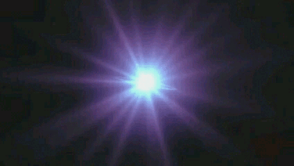

Hace 13,800 millones de años todo lo que existe estaba en un punto más pequeño que un átomo. En un parpadeo, nació el espacio, el tiempo y la materia.
En este sitio descubrirás qué fue realmente esa gran explosión, cuáles son las pruebas que la confirman y qué misterios aún no podemos explicar. ¿Qué había antes del tiempo?

Viaja al segundo 0 Más información